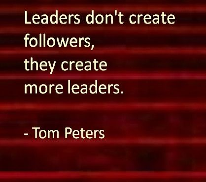

Warning: This post is in Russian.
Неделю назад, посетил мой первый семинар о адаптивном лидерстве, где получил кучу мыслей о том как Адаптивное Лидерство влияет на наш повседневную жизнь, также познакомился с профессиональными людьми которые сейчас очень успешные.
Этот воркшоп вели тренера из школы Кеннеди, Гарвардский Университет. Сэмуель Ким, Умар Шавуров, Филипп Эссл.
Содержание:
1. Что значит адаптивный челендж и как нужно справлятся с этим?
2. О семинаре, опыт. Влияние на реальную жизнь
1. Что значит адаптивный челендж и как нужно справлятся с этим?
Давай начнем представив что мы оба футболисты в команде который только начинает развиватся. Теперь представь что мы новички в этой команде. Каждый день тренируемся, тренер на нас кричит/ругает, команда недооценивает; но прежде всего давай начнем со старым газоном который перестал работать..
На поле так много играли что искуственный газон уже рвется, сетки тоже не годится, когда видишь этот газон, даже играть не хочется. Газон так испортился, что даже если упадешь - можешь получить трамву (просто представь). Увидев этот газон, президент нашего клуба позвал строителей построить новый газон. Новый газон о котором мы все так мечтали, построили всего за несколько дней и продолжаем играть. Проблема решена. Подобные проблемы назовем - техническими. Потому что там были технари/инженеры которые за просто построили замечательный газон. Тут даже не надо было думать, у президента былo достаточно денег, и он просто заплатил за строителей.
Мы играем дальше. Все же тренер кричит работать, просит сходить за кофе и т.д, а мы приносим ему кофе, да не только ему, но и всем командам. Скажем что мы приносим, выполняем его приказы, потому-что у него имеется формальнaя власть. Потому-что мы не уважаем его, у него есть должность как ТРЕНЕР. В такой ситуации, президент не может даже дать денег чтобы специалисты пришли, и решили проблему. Даже нету таких специалистов. Назовем подобные проблемы - адаптивными, в котором мы не знаем как решить. Мы даже не знаем проблему.
Сделаем паузу на этом и проведу еще один пример чтобы смог обяснить еще лучше. Мы хирурги :). У нас есть целая клиника и команда которая лечит и делает расличные операции. Скажем что Асан много употребляет алкоголь и у него возникла проблема с почками. Кроме того, он еще много курит. У него есть болезнь почек, которые нуждаются срочной операции. Операция прошла очень утонченна, но мы смогли сделать это. Однако остается проблема в том что как мы можем сделать так чтобы он жил более здоровой жизнью?
Однако остается проблема в том что как мы можем сделать так чтобы он жил более здоровой жизнью? Адаптивная проблема - это не то, что ты можешь повесить работу, на шею сотрудника. Это когда проблема касается всех. Все сотрудники; медсестры, врачи, хирурги и остальные ваши помощники являются частью проблем. И тут уже работает адаптивное лидерство
1. Ты должен выйти на балкон. Ты должен отделится и отпустить всех чтобы они говорили о проблеме и решение к нему. Выйти на балкон - означает просто молчать и слушать других, слушать каждого из них, чтобы увидеть полный рисунок проблемы. Наблюдай. Что происходит?
2. Ты обрабатываешь несколько ответов/гипотезов из своего наблюдения и задаешь сложные вопросы которые поставят тебя и твоих сотрудников в дискомфортное положение. Ты меняешь себя и всю атмосферу при этом ты мобилизируешь их генерировать решений. На первый раз это может не сработать. Ты ошибешься и это в адаптивном лидерстве вполне нормально.
Вернемся к проблемe с футбольным клубом. Тут проблема состоит в том что - люди personalize конфликт. Тренер не признает нас, а наша команда недооценивает, хотя мы и не хотим никакого конфликта.
Часто, чтобы решить адаптивную проблему - нужно задать несколько вопросов.
1. Что такая адаптивная проблема в этой ситуации?
2. Какие заинтересованные стороны есть в данной ситуации?
3. Каковы их потенциальные потери?
4. Как эффективно заинтересованные стороны использовали формальную и не формальную власть? и т.д
И так. Это может кажется немного запутанным, но если следить за каждым вопросом, то это может облегчить твой процесс работы.
Адаптивное Лидерство - это фреймворк который помогает во всех областях, чтобы решить адаптивные проблемы. Особенно в бизнесе или в организации в котором придется руководить группу людей. Адаптивный лидер ставит себя в дискомфортную ситуацию, слушает критики, слышит мнения своих сотрудников, делает изменения, падает, и наконец ведет к цели. Нужно требовать сложные вопросы. Вопросы которые реально поставят тебя в не удобное положение
2. О семинаре, опыт. Влияние на реальную жизнь.
Okay, Вы наверное уже задумались над навыком который по-моему мнению является один из важных навыков который у человека должно быть. Я думаю что, лидер - это тот кто может вести группу с точки А до цели Б. Чтобы дотичь до точки Б нужно обойти множество различных проблем, в том числе и адаптивные проблемы. Время рассказать о семинаре.
Начнем с тренеров. Очевидно, тренера были с опытом, но меня впечатлило как они обьясняют, проводя примеры из реальной жизни. Сэм меня впечатлил тем что у него есть предпринимательские навыки и выступает он, как Джек Ма. Умар тем что он относился к нам. У нас были различные мнение, мы были не согласны с некоторыми, но Умар просто говорил "хорошо". А еще он задавал много сложных вопросов которые заставляли нас задуматся. Филипп тем что у него очень большой опыт с самой теорией. Также Филипп работал с создателем фреймворка Адаптивное Лидерство. Обьяснял теорию которую мы потом практиковали на кейсе.
Следующий импакт были люди и помещение. Помещение закрыли когда уже было время начинать, никаких телефонов или фотоаппаратa и быть активным, таковы были правила нашего семинара. На первом же кейсе уже познакомился с многими людьми, которые сейчас очень успешные. Встретил Назира Бейшеналиеву, сениор-разработчика в Inkubasia, психолога который практикует Монтесори, простого подростка который учится в Нью Йорке, студентов из Ауца, начинающих бизнесменов и еще многих персоналов. Тех кого я встречал имел уникальный опыт в своей сфере и было очень приятно услышать их историю и советы, которые пригодятся в будущем.
Один из важных импактов было что они заставляли нас думать/размышлять над проблемой, перед тем как его решить (Я полюбил эту часть). Были примеры сложных проблем, где мы решали 75 минут и при том давали различные мнения. Нам говорили выйти из комфорт зона и проявить себя. Лидировать в группе, сбалансировать напряженность, задавать конкретные вопросы - это все практиковали. Я думаю в жизни пригодяться такие навыки как Лидество, если будешь работать в команде. Кроме того, лидерство - это не только в команде случается, но и в самостоятельной жизни. После семинара, мне пришло мнение что каждый человек может стать лидером своей жизни. Я должен руководить себя, спрашивать у других, слышать критику и заставлять их задавать сложные вопросы, должен стать лидером своей жизни. Как говорил Сэм, у каждого лидера есть ответственность/выбор. Я должен понимать это и работать.
После семинара, мне пришло мнение что каждый человек может стать лидером своей жизни.
Еще один импакт был в том что, я узнал что лидер не делает все за всех. Я просто неправильно понимал о лидерстве. Лидер - должен включать всю команду, чтоб вся команда работала, а ненавешивать задания на начальника. Работа должна двигатся коллективно, а лидер должен двигать работу. По-моему мнению, такие понятия о лидерстве, помогут мне практиковать и ускорить продуктивность работы в будущем. Также размышлять над кейсами тоже пригодятся когда я встречу реальную жизненую, адаптивную проблему. Это был удивительный опыт, с профессионалами из Гарварда и с аудиторией 70 человек.
В конце, хочу сказать что некоторые люди думают о лидерстве совсем по-другому. Конечно есть разные мнения, но то что я писал были моими. Хочу сказать что мне повезло что я смог получить такие теории и окружить себя хорошими людьми. Хотя и чувствовую себя тупым в аудитории, ставлю себя выше. Это делает меня счастливым и уверенным. Об этом напишу на следующем блоге.
Если есть вопросы, you're welcome.